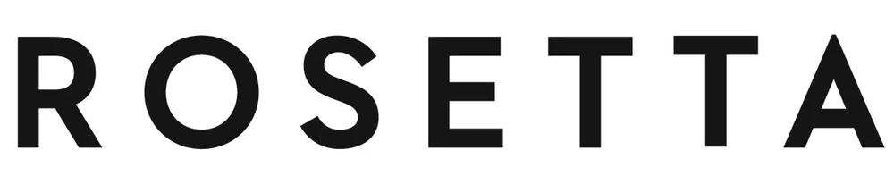
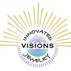
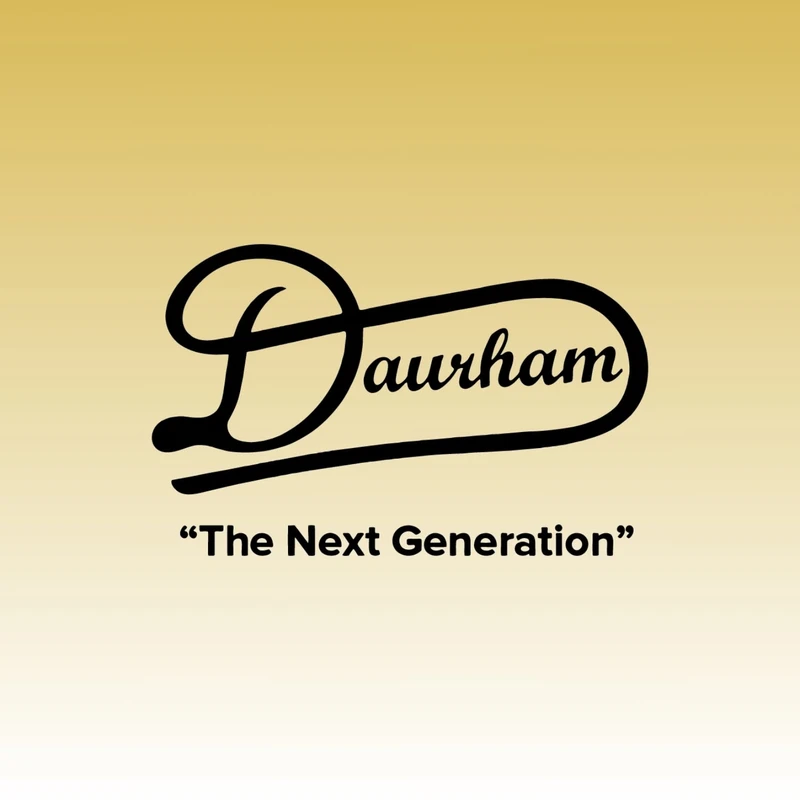
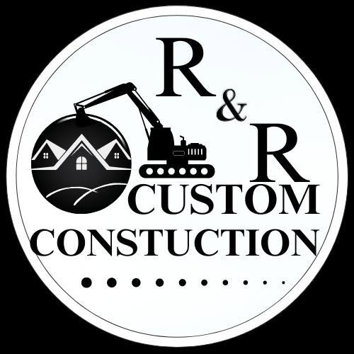
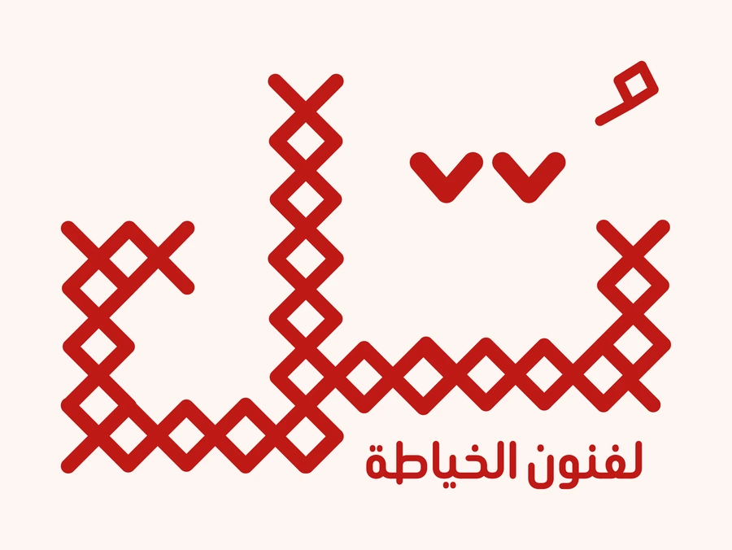

Web & digital experiences
Modern, responsive websites and storefronts designed around clarity, usability, and the next action you want visitors to take.
I’m Md Ariful Islam Shipu, a digital marketer, social media manager, project manager, and web designer. I help businesses strengthen their online presence through clear strategy, creative execution, and practical digital systems.
Digital Creative & Growth Partner
Good digital work should look considered and solve a real problem. I bring design, technology, and marketing together to help make that happen.
Modern, responsive websites and storefronts designed around clarity, usability, and the next action you want visitors to take.
Social content, graphics, short-form video, and visual systems that give your brand a recognisable and consistent presence.
Search optimisation, campaign support, audience research, and performance-minded content that connects activity to business goals.
Platform planning, content calendars, profile improvements, publishing workflows, and community-focused strategy.
Purposeful edits for reels, product stories, explainers, and branded content, shaped for attention without losing the message.
A second set of eyes on your online presence, helping identify gaps, prioritise improvements, and make the next step clearer.
Practical AI assistants for lead qualification, FAQs, customer enquiries, and repetitive workflows, designed around your business process.
Appointment request flows, consultation booking pages, lead capture forms, and connected follow-up workflows that help turn interest into action.
Client collaborations across e-commerce, jewelry, music, entertainment, hair care, construction, and sewing & embroidery, in the UK, the US, and Qatar.





I work across the overlap of creative communication, digital tools, and business growth. From shaping a brand’s online presence to building a content plan or improving a website, I enjoy turning scattered ideas into something people can understand and use.
I am currently pursuing a Bachelor of Social Science (Honours) in Sociology and Anthropology at Shanto-Mariam University of Creative Technology. Studying people, culture, and social behaviour adds a human-centred perspective to how I approach audiences, communication, and digital strategy.
R & R Custom Construction (Washington, US); Rosetta Ecom Store (London, UK); Suga-T (California, US); Innovated Visions Jewelry (New York, US); Tulle Threads (Qatar).
Daurham Hair Product LLC (Arizona, US) as Project Manager and Shaka Dakan Music Production (Utah, US) as Website Designer.
Shanto-Mariam University of Creative Technology, Bangladesh.
Tell me what you need help with, or request a consultation. Use the dedicated contact page to send a project enquiry or booking request.
Contact & booking ↗